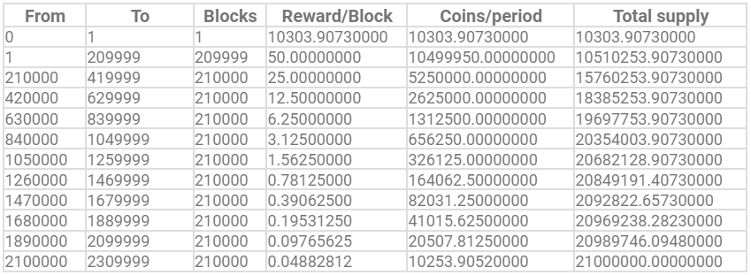
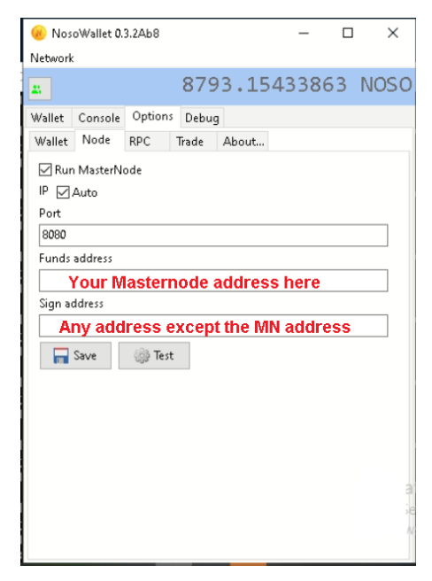
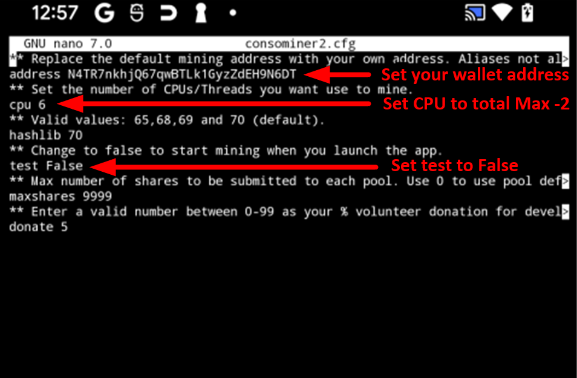
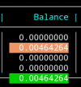
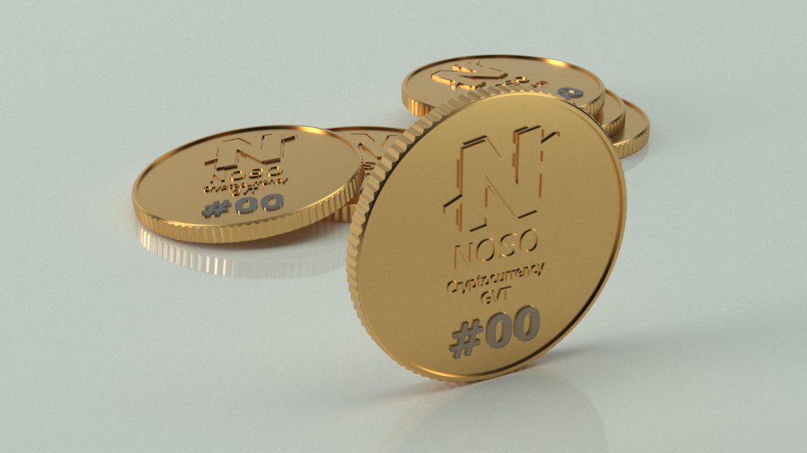

Noso is a next generation Peer-to-Peer cryptocurrency that is accessible to consumers and merchants, is fast, reliable, and secure with minimal transaction costs. Noso has its own lightweight blockchain which is not a fork, token, or copy of any other existing codebase. With Noso’s unique “Nosohash” algorithm and consensus ensuring decentralized masternodes (MN), the network is immune to 51% PoW attacks. Noso coins can be earned through Proof of participation on work (PoPW) on any CPU based device. The project goal is to create a unique and sustainable cryptocurrency with fair distribution that will be widely used for the payment of goods and services online, without a need for third parties or intermediaries.
Noso Specifications
- Name: Noso
- Ticker: NOSO
- PoPW algorithm: Nosohash
- Genesys block: March 7th, 2021
- Total Supply: 21 million coins
- Initial Block Reward: 50 Noso
- Current Block Reward: 50 Noso (split between Masternodes 40% (increasing 1% every 4000 blocks, up to 60%), Project development funds 10%, remaining to PoPW)
- Transaction speed: up to 1900 transactions per second
- Transaction cost: 0.01% (min. 0,00000010 Noso)
- Block time: 600 seconds
- Premine: 0.049% (10303.9073 Noso) used as development fund.
Noso Website
Noso Block Explorer
Noso Block Explorer (mirror)

Noso Whitepaper
Getting Started
Step 1
Join Noso Discord for support and to learn more about the project
Step 2
Download and install NosoLite wallet or Noso Mobile wallet for your OS
Step 3
Purchase Noso coins through Discord Channels or Earn Noso coins with "Noso Earn" software
Step 4
Once you have enough coins, Help with Noso decentralization by setting up and running your own Masternode
Step 5
Participate in the project in any way you can. Ask Noso Discord Moderators and active members how you an help
Step 6
Be an active member on Discord and a positive influence for Noso on Social Media
Noso Lite Wallet
NosoLite wallet allows users the ability to generate new addresses, assign aliases to addresses, import or export addresses, password encrypt wallet addresses, and send and receive coins to and from other Noso coin holders. Nosolite is available for most major operating systems including Windows, Linux and macOS. Once installed, all wallets will auto-create one default address and are ready for use.

Download the latest version of NosoLite (here)
Noso Mobile Wallet
NosoMobile wallet allows users the ability to generate new addresses, assign aliases to addresses, import or export addresses, password encrypt wallet addresses, and send and receive coins to and from other Noso coin holders. NosoMobile is available for Android OS. Once installed, NosoMobile will auto-create one default address and is ready for use.

Download the latest version of NosoMobile (here)
Earn Noso running a Node
To run a masternode, from inside of NosoNode, enter your funds address (address with sufficient Noso) into the “node” tab of Noso Wallet; “test” then “save.” Masternode rewards will begin within 2 blocks and you will see your icon at the bottom left corner of NosoWallet change from a wifi antenna to a satellite dish.
Masternodes (MN)

Minimum recommended requirements for running a masternode
- System running Windows or Linux OS
- x86 64bit based hardware
- 2 CPUs
- 1024 MB Memory
- SSD based Harddrive with 1GB of available space
- 100 Mbit/s internet connection
Earn Noso using only a Mobile Device
To earn Noso through PoPW on your Android device, you will first need to download and install a wallet.
Step 1
Download and install the latest version of NosoMobile wallet from Github.com (here).
Upon installation, wallet will generate a default address that you will need to copy/paste in a later step.
Step 2
Install the Termux App from FDroid app store (here) NOT from Google Playstore! Once FDroid is installed, open FDroid and Install Termux.
Step 3
Launch Termux App and perform the following:
- Update Termux:
pkg update
- Upgrade Termux:
pkg upgrade
- Install Proot Distro:
pkg install proot-distro
- Install Debian:
proot-distro install debian
- Login to Debian:
proot-distro login debian
- Now that you are logged into Proot-Distro Debian, Update, upgrade and install wget and nano:
apt-get update -y && apt-get upgrade -y && apt-get install wget -y && apt-get install nano -y
- Download "Get Noso" app (version 1.3) wget:
wget https://cdn.discordapp.com/attachments/926134526344843366/1043832815105613944/consominer2-v1.3-aarch64
- Make "Get Noso" app executable:
chmod +x consominer2-v1.3-aarch64
Run "Get Noso" app from within Termux/proot-Distro/Debian:
./consominer2-v1.3-aarch64
The inital run creates files needed for further configuration.
Step 5
Close "Get Noso" app with the key combination
alt+X
Once closed, you will need to edit the consominer2.cfg configuration file:
nano consominer2.cfg
Update, copy/paste your wallet address into configuration, set your CPU, and test to "false"
SEE IMAGE BELOW:

Close and save your changes using the key combination
CTRL+X and when prompted type Y to save changes.
With configurations in place, you are now ready to start earning coins.
Please note, a typical earning period consists of 48 blocks from the moment you start participating. It takes 7 1/2 hours to go through 48 blocks and you will not see coins in your wallet until after the 7 1/2 hours has lapsed. When participating, you will see a "balance" column with coins pending in green. This is the balance of coins you will receive when your participation period has expired.

Earn Noso on Windows
To earn Noso Coin, you will need a wallet and earning software
Step 1
Download the and install latest version of Nosolite wallet for your OS from Github.com (here)
Upon installation, Nosolite will generate a default address to use for earning and holding Noso coins.
Step 2
Download and install the latest Noso Earning software from Github.com (here)
You may be required to create an exception rule in your antivirus software to run the application.
Step 3
- Launch the Noso Earning app to autocreate files needed for configuration.
- Modify the consominer2.cfg configuration file, updating the following fields:
address AddressFromYourNosoLiteWallet- cpu 1 (setting this to more than 1 CPU is wasteful and doesn't increase your coins earned)
- test False (set this to "False" so that Earning starts as soon as the app opens)
Step 4
With configurations in place, you are now ready to start earning coins.
Please note, a typical earning period consists of 48 blocks from the moment you start participating. It takes 7 1/2 hours to go through 48 blocks and you will not see coins in your wallet until after the 7 1/2 hours has lapsed. When participating, you will see a "balance" column with coins pending in green. This is the balance of coins you will receive when your participation period has expired.
HAPPY EARNING!
Earn Noso on Linux
To earn Noso Coin, you will need a wallet and earning software
Step 1
Download the and install latest version of Nosolite wallet for your OS from Github.com (here)
Upon installation, Nosolite will generate a default address to use for earning and holding Noso coins.
Step 2
Download and install the latest "Get Noso"software from Github.com (here)
From within a terminal on your Linux machine, enter the following commands:
sudo apt-get update -y && apt-get upgrade -ywget https://github.com/Noso-Project/consominer2/releases/download/v1.5/consominer2-v1.5-x86_64-linux.tar.gztar -xvzf consominer2-v1.5-x86_64-linux.tar.gzchmod +x consominer2-x86_64-linux./consominer2-x86_64-linux
Note, these steps assume x86 64bit hardware. If your system has an arm or aarch64 CPU, you will need to use a different binary. Refer to Earn Noso on a Mobile Device for your ARM binary download.
Step 3
After launching "Get Noso" software, press
ALT+X to close. The first "run" will auto-create your configuration files.
Open "consominer2.cfg" using a text editor like Nano.
nano consominer2.cfg
Select an address from your NosoLite wallet and modify your consominer2.cfg file by modifying the following fields:
address AddressFromYourNosoLiteWallet- cpu 1 (setting this to more than 1 CPU is wasteful and doesn't increase your coins earned)
- test False (set this to "False" so that Earning starts as soon as the app opens)
- Close Nano and save your changes using the key combination
CTRL+Xand when prompted typeYto save changes.
With configurations in place, you are now ready to start earning coins.
Please note, a typical earning period consists of 48 blocks from the moment you start participating. It takes 7 1/2 hours to go through 48 blocks and you will not see coins in your wallet until after the 7 1/2 hours has lapsed. When participating, you will see a "balance" column with coins pending in green. This is the balance of coins you will receive when your participation period has expired.
HAPPY EARNING
Noso Governance (GVT)
Built into Noso protocol is a Governance Token (GVT) poll management system. This system allows GVT owners to create project related polls for consideration which are voted upon by other GVT owners. In order to participate in the voting process, an individual must acquire through purchase or trade, a Noso Governance Token (GVT). These tokens are available to anyone wanting to participate in the voting process. Currently if you would like to purchase a GVT you must reach out to a moderator or developer from the Noso project Discord.

Governance Tokens have the following specifications:
- Inital 100 GVTs have been minted
- GVTs are transferable
- 1 GVT = 1 vote
- Any GVT owner can start a poll
- Polls with +75% of approbation will be mandatory; +50% will be recommended
- New GVTs are minted every year only (on demand, after government poll approbation)
- GVTs can be banned by other GVTs owners in certain circumstances. When banned, the GVT owner becomes suspended from creating new polls or participating on existing ones for 90 days.
- Each GVT can only run one poll at a time
- GVTs rules can be adjusted by a GVT votation
Example GVT poll: Should NOSO reduce the PoPW reward to 5%?
Troubleshooting
work in progress
- Creating new wallet address
- Adding an alias to your wallet address
- Error downloading release: Could not initialize OpenSSL library Update Failed